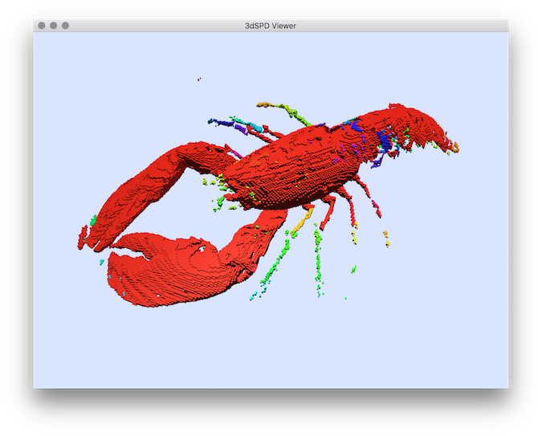

Loading...
Searching...
No Matches
Volumetric
- Author(s) of this documentation:\n Bertrand Kerautret
- criticalKernelsThinning3D : applies an criticalKernels thinning algorithm of a 3d image file (vol,longvol,pgm3d...) with 3D viewer.
- 3dVolMarchingCubes : outputs the isosurface of the input volume as an OFF file.
- homotopicThinning3D : applies an homotopic thinning of a 3d image file (vol,longvol,pgm3d...) with 3D viewer.
- volAddBorder : adds a border of one voxel with value 0 around a vol file.
- volAddNoise : adds Kanungo noise to a binary object with 0 values as background points and values >0 for the foreground ones.
- volCComponentCounter : counts the number of connected component (same values) in a volume (Vol) file image.
- volCrop : crops a 3D vol image from domain coordinates.
- volFillInterior : fills the interior of a voxel set.
- volFlip : flips 2D slice image of an 3D vol image (mirror transformation).
- volImageMetrics : applies basic image measures (RMSE, PSNR) between two volumetric images A and B.
- volIntensityScale : applies a linear rescaling of the image intensity.
- volMask : extracts a new image from the a mask image.
- volReSample : re samples a 3D volumetric image (.vol, .longvol, .pgm3d) with a given grid size.
- volSegment : segments volumetric file from a simple threshold.
- volShapeMetrics : applies shape measures to compare two volumetric images A and B (shape defined from thresholds).
- volSubSample : brutally sub samples a vol file (division by 2 in each direction).
- volTrValues : applies basic vol image transform from the input values to output values.
- volInfo : to get information (domain size, value distributions) from a VOL file.
 |  |  |
| 3dVolMarchingCubes | homotopicThinning3D | |
 |  |  |
| volTrValues | volSegment | volSubSample |